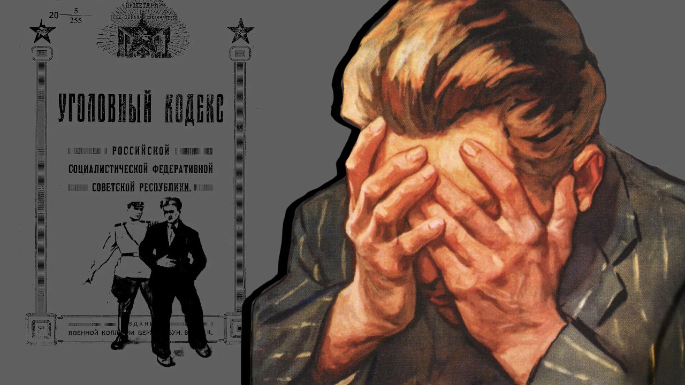
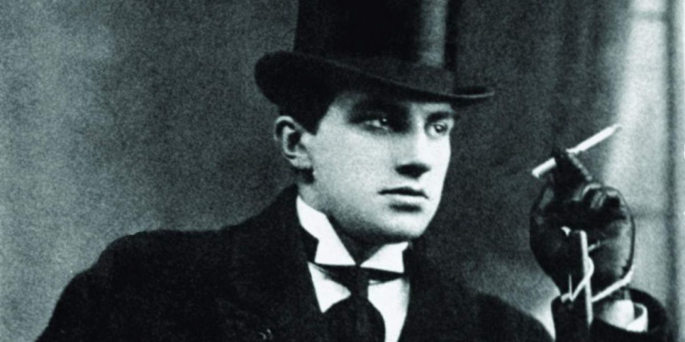
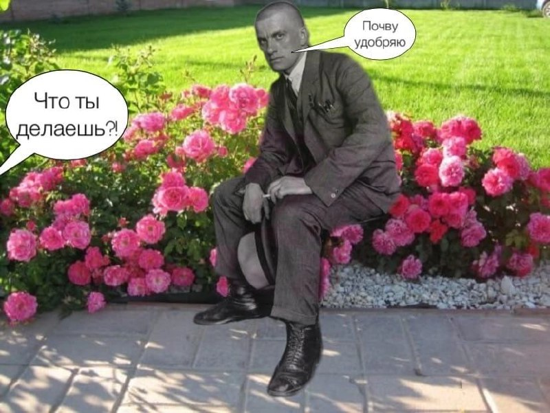
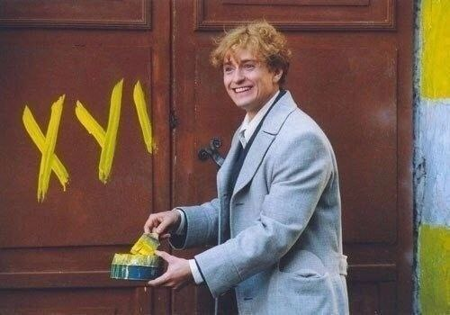

Русский - народный
В мире существует множество языков и матерный тоже можно причислить к одному из них. Он ближе к народному, но и его можно искусно использовать, как средство художественной выразительности. Одни на нём говорят, а другие категорически против нецензурной брани.
Мат — это обсценная, экспрессивная, табуированная русская лексика. Люди используют его повсеместно, но что насчёт писателей, поэтов, деятелей культуры? Разве образованным людям свойственно выражаться таким низким языком?
Использование мата всегда считалось неприемлемым в приличном обществе и в литературе. Обычно он цензурируется в периодической печати, на телевидении, радио и в других СМИ. Однако в современной литературе у Пелевина, Сорокина, Довлатова и других можно встретить непристойные выражение, что уже не ново. В более ранних работах других русских писателей также можно встретить подобное.
В середине XIX века, во многом благодаря Пушкину, русский язык вновь возымел популярность. Теперь на нём можно было изъясняться и писать, хотя несколько десятилетий в моде был французский язык. И, так как русский снова стал приемлем, начали активно развиваться народные говоры, разного рода жаргоны и просторечия, и, конечно, не обошлось без нецензурных выражений, которые использовались и в литературных произведениях.
Использование мата всегда считалось неприемлемым в приличном обществе и в литературе. Обычно он цензурируется в периодической печати, на телевидении, радио и в других СМИ. Однако в современной литературе у Пелевина, Сорокина, Довлатова и других можно встретить непристойные выражение, что уже не ново. В более ранних работах других русских писателей также можно встретить подобное.
В середине XIX века, во многом благодаря Пушкину, русский язык вновь возымел популярность. Теперь на нём можно было изъясняться и писать, хотя несколько десятилетий в моде был французский язык. И, так как русский снова стал приемлем, начали активно развиваться народные говоры, разного рода жаргоны и просторечия, и, конечно, не обошлось без нецензурных выражений, которые использовались и в литературных произведениях.

У Александра Пушкина, например, мат встречается в произведениях в виде “ребусов” — длительных многоточий вместо слов, но ему и в голову не могло прийти декларировать со сцены матерные слова. Это присуще поэтам XX века. Впервые такой приём использовали футуристы в 1910 году. Их целью было шокировать публику с помощью "крепких" слов и выражений. Например, Игорь Северянин, выходя на сцену был в амплуа человека, который пресыщен эротикой и развратом. Но сам поэт не вкладывал в ненормативную лексику никаких исключительных значений, которые нельзя выразить другими словами.
Считается, что на широкое использование мата в речи повлияла революция. В начале ХХ века российская культура находилась в стрессовом состоянии — революция перевернула всё с ног на голову. Хорошее и плохое поменялись местами, и с 1920 года началось формирование новой культуры, а это требовало нового языка.
Вероятно, в литературе мат появился для того, чтобы приблизить её к народу. Это попытка совместить культуру элитарную и массовую. Кроме того, использовалось смешение различных жанров. Этим, в основном, занимались писатели середины XX века, но первые попытки предприняли советские авторы 20-30-ых годов. Однако, их произведения были наполнены атмосферой эйфории, так как они были полны уверенности в том, что можно создать нового человека. Одним из тех, кто старался это сделать, был Владимир Маяковский.
Считается, что на широкое использование мата в речи повлияла революция. В начале ХХ века российская культура находилась в стрессовом состоянии — революция перевернула всё с ног на голову. Хорошее и плохое поменялись местами, и с 1920 года началось формирование новой культуры, а это требовало нового языка.
Вероятно, в литературе мат появился для того, чтобы приблизить её к народу. Это попытка совместить культуру элитарную и массовую. Кроме того, использовалось смешение различных жанров. Этим, в основном, занимались писатели середины XX века, но первые попытки предприняли советские авторы 20-30-ых годов. Однако, их произведения были наполнены атмосферой эйфории, так как они были полны уверенности в том, что можно создать нового человека. Одним из тех, кто старался это сделать, был Владимир Маяковский.

Про его отношение к обсценной лексике сложно сказать что-то конкретное, но если верить легендам, то поэт мог крепко выругаться как в обществе, так и на бумаге. Яркий и самый достоверный пример этому — стихотворение “Вам!”:
“Вам ли, любящим баб да блюда,
жизнь отдавать в угоду?!
Я лучше в баре блядям буду
подавать ананасную воду!”
жизнь отдавать в угоду?!
Я лучше в баре блядям буду
подавать ананасную воду!”
Есть предположение, что у поэта было два варианта концовки данного стихотворения. Для публичных выступлений он использовал строки с резким вульгаризмом:
“Я лучше в баре фуям буду
Подавать ананасовый квас!”
Подавать ананасовый квас!”
А вариант с “бляди” появился через несколько месяцев для публикации в сборнике “Взял”. Это связано с тем, что поэт Маяковский и издатель Осип Брик были вынуждены ориентироваться на цензуру и выдать более приемлемый вариант. В печатных изданиях используется отточие и получается “б…”.
Конечно, Маяковскому приписывают более экспрессивные строки, которые ему на самом деле не принадлежат — одним из самых знаменитых считается следующее стихотворение:
Конечно, Маяковскому приписывают более экспрессивные строки, которые ему на самом деле не принадлежат — одним из самых знаменитых считается следующее стихотворение:
“Вы любите розы?
а я на них срал!
стране нужны паровозы,
нам нужен металл!
товарищ!
не охай,
не ахай!
не дёргай узду!
коль выполнил план,
посылай всех
в пизду
не выполнил —
сам
иди
на
хуй.”
а я на них срал!
стране нужны паровозы,
нам нужен металл!
товарищ!
не охай,
не ахай!
не дёргай узду!
коль выполнил план,
посылай всех
в пизду
не выполнил —
сам
иди
на
хуй.”

Можно сказать, что в ХХ веке произошла революция мата. Из употребления ушли или практически не используются некоторые бранные слова, такие как: муде, елда, манда, елдак и многие другие. Но те 4 слова, которые остались, породили множество новых слов. От одного корня могут выходить множество слов, значение которых чаще всего зависит от контекста. Это происходит в последние 100 лет, а до этого, если брать, например, Пушкинские времена, то матерные слова использовались в значении половых органов и процесса соития.
Во многом мат — это языковая и культурная загадка. Большинство лингвистов видят его как неотъемлемую часть русского языка, однако существует проблема его неверного использования. Если человек может умело, к месту в жизни или в тексте употребить такую лексику, то она будет допустима, но если непристойные слова становятся междометиями, то это неправильно. Например, “ублюдок” зачастую используется, как простое ругательство, хотя на деле слово обозначает бастарда, то есть ребёнка, рождённого вне брака.
Об этом говорил Иван Бунин — почётный академик и лауреат Нобелевской премии. Он был большим любителем выругаться, о чём часто вспоминали современники. Однажды Иван Алексеевич прокомментировал том сочинений Блока таким образом, что исписал всю рукопись нецензурными выражениями. И этот случай не единственный. Высшей точкой любви к хлёстким бранным выражениям стал словарь матерных слов, который Бунин составил самостоятельно.
Ещё одним любителем подобных изречений был Сергей Есенин — поэт, выросший в российской деревне и воспевающий красоты её природы. Но какая деревня без мата? Из воспоминаний современников известно, что в нетрезвом состоянии Сергей Александрович часто экспромтом рассказывал стихи, но их никогда не записывал. Есенину, также как и Маяковскому, приписывали множество стихотворений с обилием обсценной лексики, но большинство из них не принадлежат поэту. Однако, в его творчестве есть произведения, которые действительно принадлежат Сергею Александровичу, например, поэма “Пугачёв”:
Во многом мат — это языковая и культурная загадка. Большинство лингвистов видят его как неотъемлемую часть русского языка, однако существует проблема его неверного использования. Если человек может умело, к месту в жизни или в тексте употребить такую лексику, то она будет допустима, но если непристойные слова становятся междометиями, то это неправильно. Например, “ублюдок” зачастую используется, как простое ругательство, хотя на деле слово обозначает бастарда, то есть ребёнка, рождённого вне брака.
Об этом говорил Иван Бунин — почётный академик и лауреат Нобелевской премии. Он был большим любителем выругаться, о чём часто вспоминали современники. Однажды Иван Алексеевич прокомментировал том сочинений Блока таким образом, что исписал всю рукопись нецензурными выражениями. И этот случай не единственный. Высшей точкой любви к хлёстким бранным выражениям стал словарь матерных слов, который Бунин составил самостоятельно.
Ещё одним любителем подобных изречений был Сергей Есенин — поэт, выросший в российской деревне и воспевающий красоты её природы. Но какая деревня без мата? Из воспоминаний современников известно, что в нетрезвом состоянии Сергей Александрович часто экспромтом рассказывал стихи, но их никогда не записывал. Есенину, также как и Маяковскому, приписывали множество стихотворений с обилием обсценной лексики, но большинство из них не принадлежат поэту. Однако, в его творчестве есть произведения, которые действительно принадлежат Сергею Александровичу, например, поэма “Пугачёв”:
“Разве это когда прощается,
Чтоб с престола какая-то блядь
Протягивала солдат, как пальцы,
Непокорную чернь умерщвлять!”
Чтоб с престола какая-то блядь
Протягивала солдат, как пальцы,
Непокорную чернь умерщвлять!”
А также более известные строки из стихотворения “Сыпь гармоника!”:
Сыпь, гармоника! Скука… Скука…
Гармонист пальцы льет волной.
Пей со мною, паршивая сука.
Пей со мной.
Гармонист пальцы льет волной.
Пей со мною, паршивая сука.
Пей со мной.

Сергей Петунин, библиотекарь Новосибирской Государственной Областной Научной Библиотеки и литературный критик, об использовании мата в литературе:
“У использования мата в литературе XX века есть несколько целей. Первая — это стремление автора обратить на себя внимание, добавить в произведение “перчинки”. Вторая, чаще всего применяемая в кризисные для литературы эпохи, разрушение предыдущих литературных канонов, их снижение, обесценивание. И, наконец, третье, мат используется как средство выразительности.
Футуристы использовали мат в художественных целях — они свергали предыдущий литературный канон. Шла революция и по их мнению искусство тоже должно было обновиться, точно также как обновился быт и образ жизни людей. Здесь также работает то, что использование нецензурных выражений — это простой способ обратить на себя внимание.
Однако, как правило, у писателей XX века в произведениях мат использовался крайне редко, так как они очень хорошо владели словом. Для того, чтобы произвести какой-то эмоциональный эффект, им не нужно было прибегать к обсценной лексике. Потому что в основном корпусе их текстов, который мы сейчас считаем их литературным наследием, найти матерные произведения практически невозможно, так как мат в их творчестве — явление редкое.
Самый яркий пример — стихотворение Маяковского “Вам!”. Оно написано в 1915 году, когда шла первая мировая война и в нём используется одно ненормативное слово, по своей нагрузке далеко не самое тяжёлое. А цель, для которой оно используется — вывести из равновесия тех, кто не пошёл на войну.”
Футуристы использовали мат в художественных целях — они свергали предыдущий литературный канон. Шла революция и по их мнению искусство тоже должно было обновиться, точно также как обновился быт и образ жизни людей. Здесь также работает то, что использование нецензурных выражений — это простой способ обратить на себя внимание.
Однако, как правило, у писателей XX века в произведениях мат использовался крайне редко, так как они очень хорошо владели словом. Для того, чтобы произвести какой-то эмоциональный эффект, им не нужно было прибегать к обсценной лексике. Потому что в основном корпусе их текстов, который мы сейчас считаем их литературным наследием, найти матерные произведения практически невозможно, так как мат в их творчестве — явление редкое.
Самый яркий пример — стихотворение Маяковского “Вам!”. Оно написано в 1915 году, когда шла первая мировая война и в нём используется одно ненормативное слово, по своей нагрузке далеко не самое тяжёлое. А цель, для которой оно используется — вывести из равновесия тех, кто не пошёл на войну.”
Мат — это то, что можно контролировать и в умеренных “дозах” он допустим в употреблении и литературе, но это должно регулироваться каждым человеком самостоятельно. И если бы нецензурные выражения отравляли русский язык, то их бы давно искоренили из сферы употребления, а так можно сделать вывод, что “если звезды зажигают…”.
Автор: Алена Сизикова